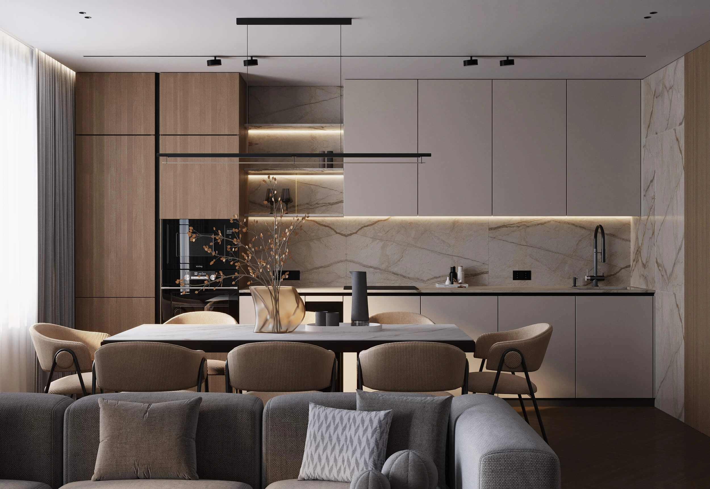

ДИЗАЙН ЖИЛЫХ И КОММЕРЧЕСКИХ ИНТЕРЬЕРОВИнтерьер.
Интерьер.
По вашему сценарию.
Проектируем жилые и коммерческие пространства. Соединяем удобную планировку, материалы и детали в цельный интерьер.
Обсудить мой проект
ПЛАНИРОВКА И АТМОСФЕРАКрасиво жить.
Красиво жить.
Удобно каждый день.
Сначала поймём, как вы пользуетесь пространством. Затем проработаем планировку, свет и материалы, чтобы каждое решение имело своё назначение.
Обсудить мой интерьер